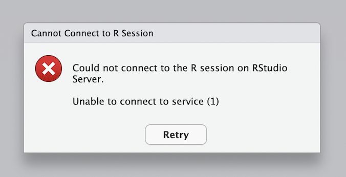

Workaround for Mac M1-chip users for Docker Desktop containers
In this post, I will address the issue of Docker Desktop not being able to run containers on Mac M1-chip machines. If you have experienced an issue creating a container from the francojc/lin-380 image where when logging in to RStudio Server you get the error message below, then this post is for you.

The issue
The issue is that the francojc/lin-380 image is built for the x86_64 architecture, but the M1-chip is an arm64 architecture (the nuts and bolts of the computer). This means that the image is not compatible with the M1-chip. The solution is to build the image for the arm64 architecture.
Rocker has alternative images for the arm64 architecture, but they are not as complete and so we will need to do some extra work to get the image to work like the original x86_64 image.
The solution
Install Docker Desktop for Apple silicon
Make sure you have installed Docker Desktop for Mac M1-chip machines (Apple silicon). If you have not, you can find the instructions here.
Pull the rocker/rstudio image
Pull the rocker/rstudio image. Open Docker Desktop, go to the search bar at the top and type rocker/rstudio. Click on the image and then click on the Pull button. Wait for the image to download.
Make sure you delete all earlier containers and images from Docker Desktop. We want to start with a clean slate.
rocker/rstudioCreate a new container from the rocker/rstudio image
- Click the
Runbutton .
rocker/rstudio image- Click on the
Optional settingsdropdown.
Fill out these fields:
- Container name:
lin-380(you choose the name, no spaces) - Host port:
8787 - Host path: (use the Finder to select a folder on your Mac where you want to save your files)
- Container path:
/home/rstudio/Workspace(use this exact path!) - Environment variables:
- Variable:
PASSWORD, Value: (you choose the password, no spaces) - Variable:
ROOT, Value:true
- Variable:
- Click the
Runbutton to create the container. Wait for the container to be created.
Open RStudio Server in your browser
- Click on the
8787:8787link to open RStudio Server in your browser. - Use the
rstudiousername and the password you chose to log in to RStudio Server.
This is the point that you would normally see the error message. But because we are using the rocker/rstudio image, we shouldn’t see the error message. If you do, stop and contact me.
Configure RStudio Server
You should now be logged in to RStudio Server. And see something like this:
This is where we will configure RStudio Server to work like the francojc/lin-380 image. We will need to do some one-time configuration in the Terminal. Click on the Terminal tab (between the ‘Console’ and ‘Background Jobs’ tabs) to open the Terminal.
- Install Quarto
Type the following command in the Terminal and press Enter:
quarto install tinytex
- Install the
tidyversepackages
Type the following command in the Terminal and press Enter:
sudo /rocker_scripts/install_tidyverse.sh
- Add custom preferences to RStudio
Create a new file called rstudio-prefs.json in the Terminal by typing the following command and pressing Enter:
touch ~/rstudio-prefs.jsonThis file should appear in your home directory. Open the file by clicking on it in the Files tab. This will open the file in the Source tab.
Copy and paste the following code into the file and save it:
{
"save_workspace": "never",
"remove_history_duplicates": true,
"reuse_sessions_for_project_links": true,
"posix_terminal_shell": "bash",
"initial_working_directory": "~",
"insert_native_pipe_operator": true,
"soft_wrap_r_files": true,
"strip_trailing_whitespace": true,
"highlight_selected_line": true,
"rainbow_parentheses": true,
"warn_variable_defined_but_not_used": true,
"default_encoding": "UTF-8",
"indent_guides": "rainbowlines",
"syntax_color_console": true,
"show_doc_outline_rmd": true,
"visual_markdown_code_editor_line_numbers": true,
"code_completion": "manual",
"rmd_viewer_type": "pane",
"rmd_auto_date": true,
"pdf_previewer": "system",
"default_latex_program": "XeLaTeX",
"use_tinytex": true,
"jobs_tab_visibility": "shown",
"default_project_location": "~/Workspace",
"panes": {
"quadrants": [
"Source",
"Console",
"TabSet1",
"TabSet2"
],
"tabSet1": [
"Environment",
"History",
"Build",
"VCS",
"Tutorial",
"Presentation"
],
"tabSet2": [
"Files",
"Plots",
"Packages",
"Help",
"Viewer",
"Presentations"
],
"hiddenTabSet": [
"Connections"
],
"console_left_on_top": false,
"console_right_on_top": true,
"additional_source_columns": 0
}
}Now you return to the Terminal and type the following command and press Enter:
cp ~/rstudio-prefs.json ~/.config/rstudio/rstudio-prefs.json
Congratulations!

You have successfully created a container from the rocker/rstudio image and configured it to work much like the francojc/lin-380 image (we have some other R packages we will install as we need them).
You can now use this container for your LIN 380 assignments!